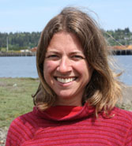
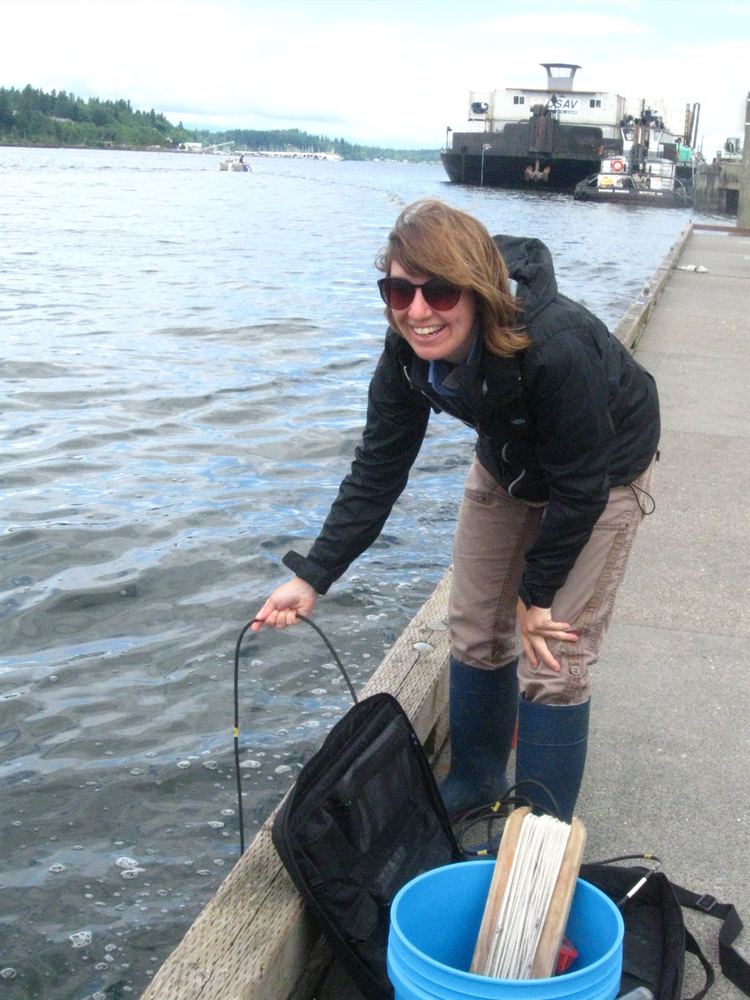
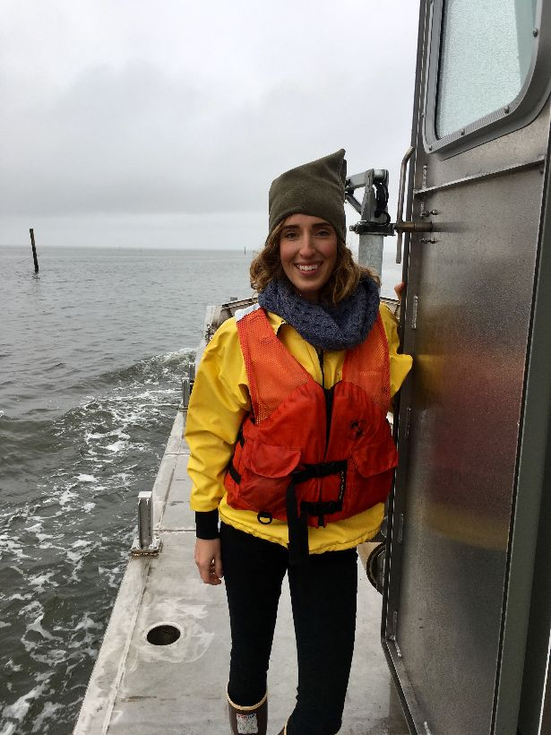

Gerardo Chin-Leo is a faculty member at The Evergreen State College (TESC) teaching in the undergraduate and graduate programs in environmental studies. He teaches marine sciences and one of his research interests is phytoplankton ecology. Working with the SoundToxins program had been a great way to teach students about phytoplankton and human impacts on marine systems. Also SoundToxins has provided a way to interact with other individuals/agencies interested in HAB and to develop research opportunities for students that can result in a significant contribution to understanding HAB phenomena in Puget Sound.
TESC is located in South Sound near Budd and Eld Inlets. Our sampling location is in Boston Harbor marina located in north Budd Inlet. The sampling team is primarily composed of students conducting marine biology/oceanography research projects as part of classes or independent research. Gerardo, with the possible collaboration of the Pacific Shellfish Institute (Olympia), will also sample during periods when there are no student projects being conducted.
Gerardo Chin-Leo

Rosa Hunter
The Pacific Shellfish Institute (PSI) was formed in 1995 to conduct research on shellfish culturing, ecology and disease as well as provide information on shellfish-related environmental and human health issues to the general public, shellfish farmers and public officials. PSI staff and community volunteers conduct phytoplankton monitoring via the "What's Blooming in udd?" program funded by the Stream Team Collective. More recently, PSI also collects samples at Bay Center in Willapa Bay in response to widespread mortality reports from shellfish growers.
Aimee Christy, Katie Houle and Natalie Sahli
  The Port Townsend Marine Science Center (PTMSC), founded in 1982, is dedicated to “inspiring conservation of the Salish Sea.” This educational and scientific organization provides information on marine conservation through programs offered in conjunction with its marine and natural history exhibits, science classes, marine science summer camps, and numerous volunteer opportunities for over 100 volunteers. The SoundToxins volunteers at PTMSC currently sample Fort Worden, Port Townsend, Mystery Bay, and Discovery Bay and have been part of the partnership since 2006. The volunteer team is enthusiastic about the opportunity to educate the public about shellfish poisoning in Puget Sound and they find participation in the program to be rewarding as they contribute to the early warning system SoundToxins has established.
If you have questions about SoundToxins and/or citizen science at PTMSC please contact their Citizen Science Coordinator, Betsy Carlson.
Mike and Kathy Nyby, Dan and Soozie Darrow, Melody and Rich Stewart, Dennis Cartwright, Jackie Gardener, Gary Elmer, Joanmarie and Doug Eggert, Frank Handler, John Conley, Jo Ferrero, Katherine Reed, Jane McDaniels, Darryl Hrenko, Larry Layman, Larry Sumpter, Chris Cooper, Kathy Woods-Smith and Anna Young
The SEA Discovery Center is a public aquarium and marine science center where visitors of all ages immerse themselves in the wonders of local marine life and deepen their connection to the marine environment. Located on the Liberty Bay waterfront in Poulsbo, WA, the Center offers fresh and saltwater exhibits, educational programs, a vibrant volunteer program, and environmental science projects involving the community. The Center aims to: ‘Reveal the joy of discovery to cultivate stewards of the marine environment.'
Chris Moore, Anne Plummer, Joyce Troyer Willson, Jackie McClure, and Karin Knopp


Established in 1968, Washington Sea Grant (WSG) began as a federal experiment in local investment, building on the University of Washington’s academic strengths in marine science, engineering and policy. In 1971, it became one of the first four programs designated nationally as a Sea Grant College.
Today, WSG is part of a national network of 30 Sea Grant colleges administered by the National Oceanic and Atmospheric Administration, U.S. Department of Commerce. This network provides a stable national infrastructure of programs in every coastal and Great Lakes state and in Puerto Rico, with an additional project in Guam. Washington Sea Grant serves communities, industries and the people of Washington state, the Pacific Northwest and the nation through research, education and outreach by:
WSG staff Teri King conducts the monitoring at the North Bay, Case Inlet site for SoundToxins. She and Nancy Nguyen also coordinate all of the SoundToxins volunteers.
Teri King and Nancy Nguyen